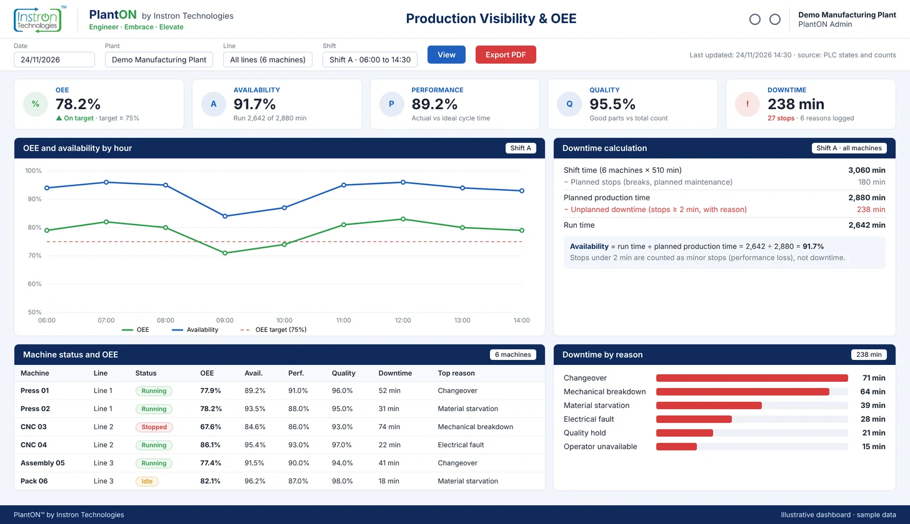
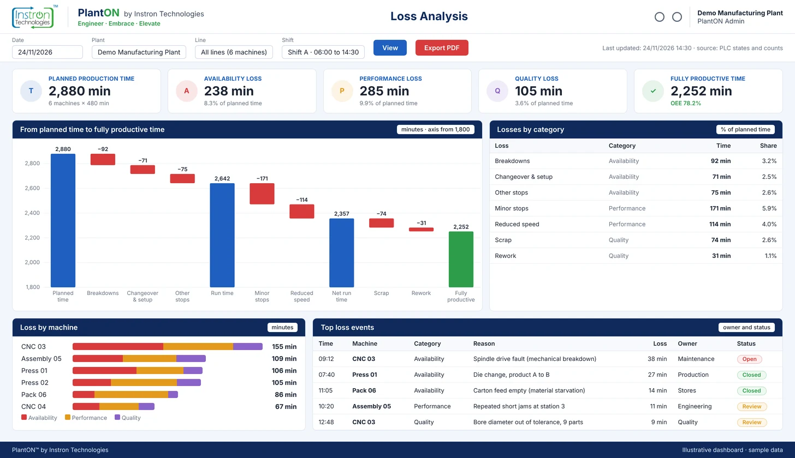

Traçabilité
Chaque lot est relié à ses matières, à sa recette, à ses équipements, à ses conditions de procédé, à ses alarmes et à ses résultats de qualité : un historique consultable plutôt que des classeurs.
PlantON™ transforme les données des PLC, du SCADA, des compteurs et des systèmes de gestion en traçabilité, en TRG (OEE), en rapports de conformité et en vues de production, sans remplacer vos systèmes de contrôle.



Ce que PlantON™ apporte à votre équipe
Chaque lot est relié à ses matières, à sa recette, à ses équipements, à ses conditions de procédé, à ses alarmes et à ses résultats de qualité : un historique consultable plutôt que des classeurs.
Les tendances, les écarts et les indicateurs d’état des équipements montrent où un lot ou une ligne dérive, pour que l’équipe agisse avant que cela devienne une perte.
Chaque rôle voit les indicateurs clés et les exceptions qui le concernent, rattachés aux données sources et mesurés par rapport à une référence convenue.
Vues des usines et des skids sur navigateur et appareil mobile, dans le respect de votre politique de sécurité TI/TO.
Rapports planifiés par lot, par quart, quotidiens et mensuels, enregistrements graphiques sans papier, registres de validation du NEP (CIP) et historique prêt pour l’audit.
Le problème d’exploitation
Les données existent généralement déjà. Elles ne sont simplement pas sous une forme exploitable.
Feuilles de lots, registres de NEP (CIP) et enregistreurs graphiques encore remplis et classés à la main.
La consommation d’utilités connue par la facture, et non par ligne, par lot ou par quart.
Une question de qualité ou d’un client oblige à fouiller dans des dossiers et des tableurs.
Les signaux se trouvent dans les PLC et le SCADA, mais personne ne s’y fie assez pour agir.
Ce que fait PlantON™
Commencez par la plus grande lacune d’information de l’usine et ajoutez des modules seulement là où les données le permettent.
Lots de matières, recette, équipements, paramètres de procédé, alarmes et résultats de qualité sur une seule chronologie de lot.
Rapports planifiés par lot, par quart, quotidiens et mensuels; enregistrement graphique sans papier; registres de validation du NEP (CIP).
Eau, vapeur, électricité, air comprimé et réfrigération par lot, par produit ou par quart, avec la provenance des compteurs conservée.
Suivi des utilités et de l’énergieÉtats de marche et d’arrêt, compteurs et causes d’arrêt, de la machine à la ligne et au quart.
Visibilité de la production et TRG (OEE)Les rejets mis en relation avec les conditions de procédé, les matières et les quarts qui les ont produits.
Le bon événement au bon rôle, sans dédoubler les alarmes de sécurité du système de contrôle; registres de quart, de lot, de NEP (CIP) et d’hygiène saisis là où les choses se passent.
Fonctionnement
PlantON™ se situe au-dessus de la couche de contrôle. Il lit les données de l’usine dans sa propre base de données et ne prend jamais le contrôle.
Points PLC et SCADA, alarmes et historien existants; machines d’OEM; compteurs d’utilités et capteurs ajoutés; SQL, CSV ou Excel; échanges avec l’ERP et SAP lorsque les interfaces le permettent; formulaires manuels.
Passerelles ou ordinateurs industriels au besoin, avec stockage et retransmission pour qu’une coupure de réseau ne laisse pas de trous dans les registres.
PlantON™ tient sa propre base de données de données d’usine contextualisées : historique des lots, des quarts et des événements pour les rapports, les tendances et la traçabilité.
Déployé dans le respect de votre politique TI/TO : zones réseau définies, comptes et accès à distance approuvés par le client, et permissions minimales.
Une usine, plusieurs vues
Déploiement
Mettre les données en service avant d’étendre le tableau de bord. Les résultats sont mesurés par rapport à une référence convenue dès le départ : heures de production des rapports, intensité d’utilisation des utilités, arrêts ou rejets.
Résultats
Les noms des clients ne sont pas divulgués. Des références sont disponibles sur demande.
Données de plus de 12 systèmes de contrôle : validation du NEP (CIP), graphiques sans papier et traçabilité de la réception du lait cru jusqu’à l’expédition.
Lire l’étude de casComparaison du TRG (OEE), des arrêts et des utilités, au-dessus d’un SCADA multifournisseur avec historien.
Lire l’étude de casSuivi à distance et revue des données d’un skid entièrement automatisé et sans opérateur, sans personne au panneau.
Lire l’étude de casAussi en fabrication : usine de moulage sous pression avec +16 % de productivité, 12 % moins d’utilités et 37 % moins de rejets; atelier de peinture de jantes en alliage avec 26 % moins de produits chimiques et 62 % moins de rejets liés à la peinture; cellule de soudage bout à bout de jantes avec +18 % de productivité; TRG (OEE) sur 26 machines. Tous les projets PlantON™
Commentaires de clients
L’équipe d’Instron a travaillé avec nos membres pour cerner les paramètres critiques et les indicateurs clés de notre atelier de peinture de jantes en alliage. Elle a livré une solution IoT PlantON™ avec des capteurs supplémentaires, permettant un suivi en temps réel de l’atelier de peinture et améliorant la traçabilité, la qualité et la productivité. (Traduit de l’anglais)
Les noms des clients ne sont pas divulgués. Des références sont disponibles sur demande.
Questions
Non. Il se connecte à ce que vous avez déjà, tient sa propre base de données de données d’usine contextualisées et ajoute par-dessus la couche de rapports, de contexte et de traçabilité.
Points PLC et SCADA, historiens, compteurs, bases de données, fichiers et interfaces ERP, selon ce qui est convenu pour chaque projet.
Oui, en lisant les signaux des automates existants lorsqu’ils sont fiables, ou en ajoutant des compteurs et des passerelles, sans modifier le contrôle des machines.
Non. Il est livré avec l’ingénierie, l’intégration, la configuration, la validation et le soutien.
Oui, par des vues sur navigateur ou appareil mobile lorsque votre politique TI/TO le permet, avec des comptes et des méthodes d’accès à distance approuvés par le client.
Par rapport à une référence convenue avant le déploiement, et présenté avec sa période de mesure.
Commencez par ce que vous savez
La première discussion est plus utile lorsque l’équipe peut présenter ses systèmes sources et la décision que les données doivent appuyer.
Préparer une demande techniqueGrandissons ensemble